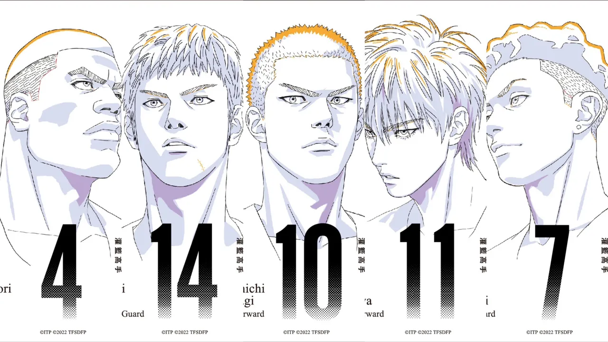
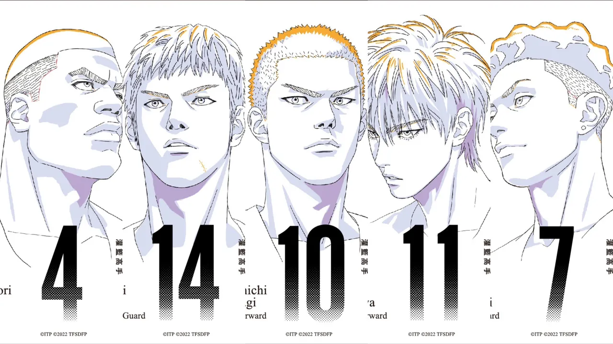
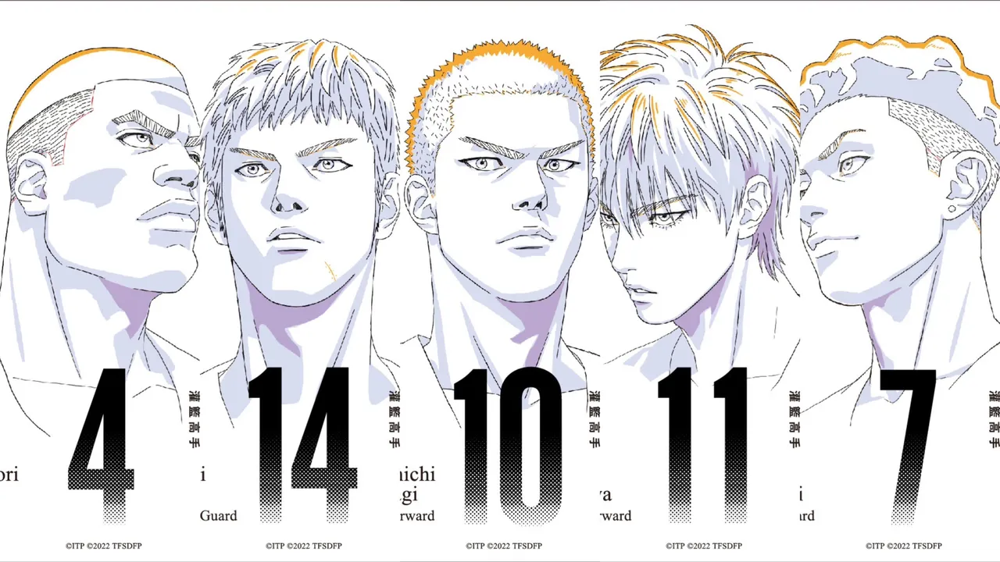
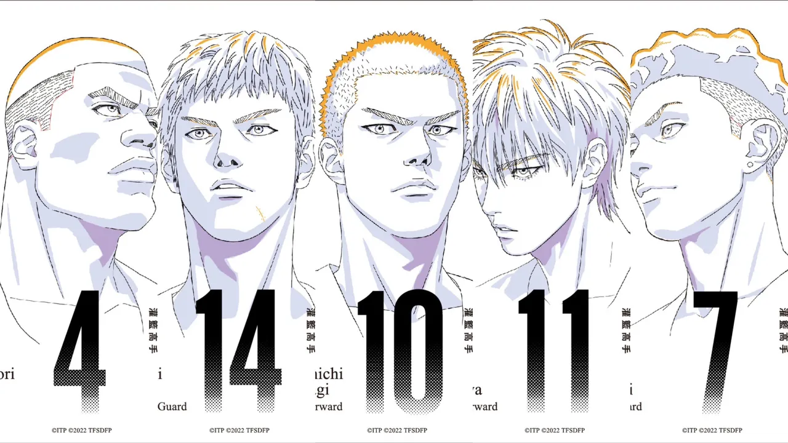

本作以湘北籃球隊的主力控球後衛宮城良田為第一視角敘事， 並以漫畫原作中在IH全國大賽湘北高中對戰日本高校籃壇第一強隊山王工業的賽事為故事主軸，穿插良田的過去。 良田的故鄉在沖繩縣，有一個哥哥宗太和一個妹妹安娜。 宗太在國中時期是一名籃球好手，在哥哥的影響下，良田也開始對籃球充滿興趣。 父親去世後，宗太成為家裡的支柱並扶持母親薰，但宗太後來於海難中喪生。 良田無比想念哥哥，於是決定穿著一件和哥哥相同背號的球衣繼續打球。但是良田身材矮小，球技亦不如哥哥，在學校的比賽中失利。 薰也因為長子的死而心碎，帶著良田和妹妹搬家到神奈川縣。 在對山王的比賽中，湘北於上半場與對手打得不相上下，比數相當接近。但在下半場開始時，山王發揮實力，良田遭到對手採用二人防守針對，因為身材差距而難以脫困。 湘北的中鋒赤木剛憲與山王的河田雅史相比落居下風，小前鋒流川楓也難以防守或突破日本第一的高中生澤北榮治。比賽節奏一面倒向山王，山王一度領先達24分。 搬到神奈川縣後，良田就讀國中，在班上沒有朋友，只是一個人練球，並一度巧遇日後湘北的隊友三井壽。 高中時良田就讀湘北高中，並加入籃球隊。赤木對良田寄予厚望，但自我沉淪成為不良少年的三井不以為然，找良田打架。 打架結果兩敗俱傷，良田鬱悶騎車時發生車禍，勉強撿回一命，母親受到很大的打擊。之後和到球隊鬧事完，將頭髮剪短髮展現決心歸隊的三井盡釋前嫌。 山王大幅領先的情況下，湘北透過暫停重整士氣，湘北大前鋒櫻木花道在教練安西光義的指點下，發揮能耐幫助隊友縮小比數。 全國大賽前，良田回到故鄉，翻看哥哥留在山洞中的東西時，想起哥哥曾立志要在高中籃壇贏過山王，並發洩了內心的感情。 良田也寫了一封信給母親，反省自己只會惹母親生氣，並說明籃球是哥哥亡故後支撐他活下去的唯一事物，感謝母親讓他繼續打籃球。 在最後兩分鐘，山王僅領先5分。最後半分鐘時差距來到1分，負傷的櫻木阻斷了澤北的得分，並傳球使流川得分。 然而澤北馬上在最後10秒穩穩投進一球，扳回比數。面對湘北最後的進攻機會，山王嚴密防守，流川最後一刻準備出手時注意到一旁空檔的櫻木，而將球傳給了他。 櫻木在比賽結束前原地跳投，球進，以一分之差湘北擊敗山王。 比賽結束後，良田前往海邊，向在那裡等的母親說「我回來了」。 數年後，澤北和良田都來到美國打籃球，兩人此時同為控球後衛，準備在比賽中一分高下。